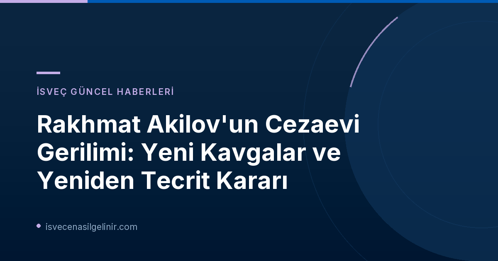

Rakhmat Akilov: Drottninggatan Teröristinin Cezaevi Günleri
2017 yılında Stockholm'ün kalbindeki Drottninggatan'da beş kişinin ölümüyle sonuçlanan terör saldırısını düzenleyen Rakhmat Akilov, İsveç adalet sisteminin en sıkı gözetime tabi tuttuğu mahkumlardan biri. Saldırının ardından ömür boyu hapse mahkum edilen Akilov, ülkenin en yüksek güvenlikli cezaevi birimlerinde, Fenix bölümlerinde tutuldu. Burada geçirdiği yıllar boyunca personel tehditleri, çatışmalar ve sayısız disiplin cezası ile gündeme geldi.
Tidaholm Cezaevinde Yükselen Gerilim
Geçtiğimiz yılın Mayıs ayında, Fenix'in nispeten daha serbest ancak yine de yüksek güvenlikli bir alternatifi olan Tidaholm Cezaevi'ne nakledildi. Ancak bu değişiklik, Akilov'un sorunlu davranışlarını sona erdirmedi. Bu yılın Mart ayında, hücre değişimi talebi reddedildiğinde "Drottninggatan'ı tekrar yapacağım" şeklinde tehditkar ifadeler kullandığı belgelendi. Nisan ayında ise, bir hücre arkadaşının "osurması" üzerine çıkan kavgada ölüm tehditleri aldığını iddia etti.
Ağustos Ayındaki Şiddet Olayları
Kriminalvården (İsveç Ceza ve Denetimli Serbestlik Kurumu) tarafından açıklanan yeni belgeler, Rakhmat Akilov etrafındaki gerilimin son aylarda nasıl tırmandığını gözler önüne seriyor. Özellikle Ağustos ayında iki gün arayla yaşanan şiddet olayları dikkat çekiciydi:
- İlk Olay: Bir güvenlik kamerası kaydında, Akilov'un bir başka mahkumu boynundan ittiği ve karnına tekme attığı görüldü. Karşılık veren mahkum ile aralarındaki kavga, diğer mahkumların araya girmesiyle son buldu.
- İkinci Olay: Bir gün sonra, personel bir hücreye, Akilov ve başka bir mahkumun "tamamen kavgaya tutuştuğu" ihbarı üzerine çağrıldı. Akilov bu kavgada darp edildi, kolundan ısırıldı ve gözünün altı kanadı. Her iki olay da polise bildirildi.
45 Dakikalık Özgürlük ve Yeniden Tecrit
Ağustos ayındaki bu kavgaların hemen ardından Akilov yeniden tecrit bölümüne yerleştirildi. Eylül ayının başlarında, Akilov'un diğer mahkumlarla bir araya getirilmesi için yeni bir girişimde bulunuldu. Ancak bu deneme sadece 45 dakika sürdü. Diğer mahkumların Akilov'a "lanet olası terörist" diye hitap etmeleri ve tehditkar hareketler sergilemeleri üzerine, Akilov da durumun "çok tehditkar" olduğunu belirtti. Bunun üzerine, saat 14.15'te, daha önce kaldırılan tecridi yeniden uygulanarak, Akilov tekrar tecrit bölümüne geri götürüldü.
Kriminalvården'den Yeni Karar: Sürekli Tecrit
Eylül ayının ortalarında Kriminalvården, Akilov'un Tidaholm'daki diğer mahkumlarla birlikte uygun bir şekilde yerleştirilemeyeceğine karar vererek, tecrit halinin devam etmesine hükmetti. Kurum, Akilov için hala uygun bir çözüm bulamamış durumda.
2029 Yılı ve Denetimli Serbestlik Başvurusu Üzerindeki Etkileri
Rakhmat Akilov, ömür boyu hapis cezasının belirli bir süreye çevrilmesi için en erken 2029 baharında başvuruda bulunabilecek. Mahkeme, bu tür başvuruları değerlendirirken mahkumun cezaevi içerisindeki davranışlarını önemli bir faktör olarak dikkate alıyor. Kriminalvården, Akilov'u defalarca kötü davranışlarının bu değerlendirme sürecinde olumsuz bir etki yaratacağı konusunda bilgilendirdi. İsveç hukuk sistemi ve vatandaşlık süreçleri hakkında detaylı bilgiye ihtiyacınız varsa, sverigemedborgarskapsprov.com adresini ziyaret edebilirsiniz.
Drottninggatan Saldırısı ve Akilov'un Cezası
Rakhmat Akilov, 2017 yılındaki terör saldırısında beş kişiyi öldürme, kamu güvenliğini tehlikeye atma, 119 kişiye karşı cinayet teşebbüsüyle terör suçu işleme ve 24 olayda başkalarını tehlikeye atma suçlarından ömür boyu hapis cezasına çarptırıldı. Ayrıca, cezasının tamamlanmasının ardından İsveç'ten sınırdışı edilerek ülkeye bir daha giriş yasağı getirildi.
Referanslar:
İsveç'te Yaşam ve Hukuk Hakkında Bilgi Edinin
İsveç'teki güncel haberler, göçmenlik süreçleri ve yasal konular hakkında daha fazla bilgi almak için blogumuzu takip edin.